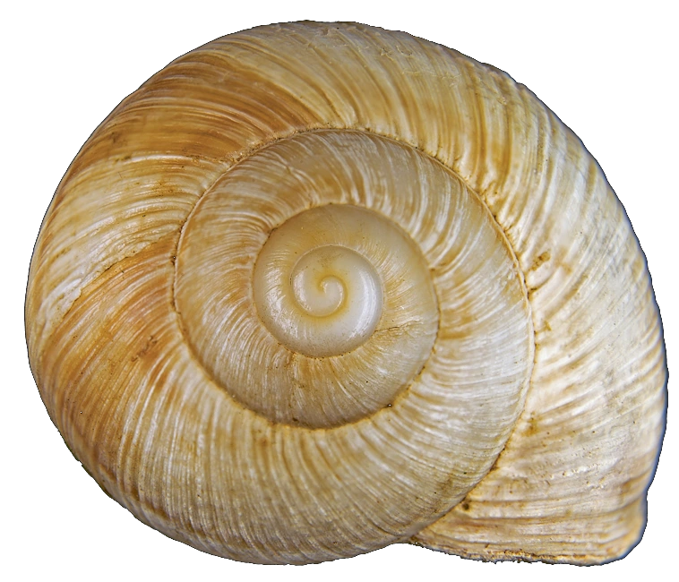
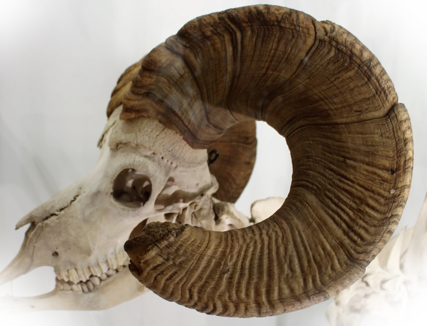

法国 · 勃艮第
勃艮第焗蜗牛
Escargots de Bourgogne经典做法用蒜香欧芹黄油。菜名对应勃艮第的饮食传统，经典食材为 Helix pomatia，具体商品的原料产地以标示为准。
勃艮第旅游局雨亭文化工作室 出品
一枚蜗牛壳，一对盘羊角。
为什么它们看起来像在沿着同一条线生长？

勃艮第蜗牛 Helix pomatia
大角羊（北美盘羊） Ovis canadensis生物图鉴
同样是壳，可以卷起来，可以像书一样合上，也可以一块压着一块。
历史图版 · 恩斯特·海克尔《自然界的艺术形态》
软体动物以现生八纲为分类骨架，另收录若干化石类群。页面显示的是代表条目数，完整的学名、异名与分类层级可从各纲的 MolluscaBase 索引查询。其他动物和微观壳体目前为选录，羊角用作形状对照。图版是历史插画，条目配图还在扩充。
现生八纲分类研究 · 世界海洋物种名录形状对照
先沿着轮廓找相似，再看隔室、壳板和开口这些细节。
照片为不同视角与比例，适合观察结构。
形状实验室
想象一个点绕着中心转。每转一整圈，它离中心的距离都乘上同一个数。这就是对数螺旋的一种画法。
r(θ) = r₀ × Wθ / 2π
这条线只画出了卷曲的路径。要描述立体贝壳，还可以观察开口如何放大、每转一圈沿轴移动多远。阅读卷壳模型研究